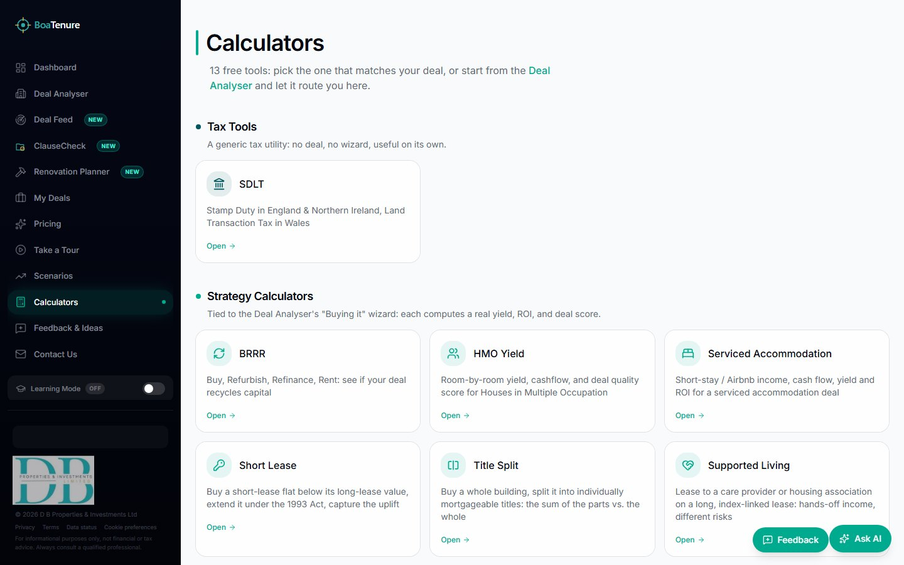
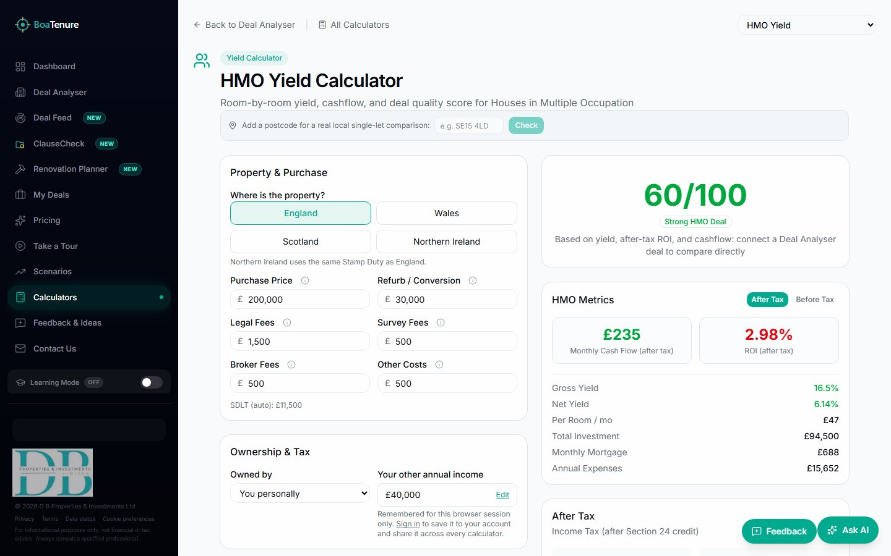

Model the complete investment
- Full and Quick Analysers
- BTL, HMO, SA, flip and BRRR
- Purchase, bridge and mortgage finance
- Cash flow, yield, ROI and payback
- Strategy-specific deal verdict
TAX-AWARE UK PROPERTY INTELLIGENCE
BoaTenure connects deal modelling, tax, local evidence, sourcing, legal-pack review and AI-assisted analysis in one working platform.

INSIDE BOATENURE
Explore genuine BoaTenure screens rendered from the live product experience. Select a workspace to see what it does and how it fits into the investment decision.
Start from a clear product home base that routes each user to the right level of analysis and support.
AN END-TO-END WORKSPACE
BoaTenure replaces a fragmented trail of portal tabs, spreadsheets, calculators and disconnected reports with one evidence-led flow.
Search the Deal Feed, paste a Rightmove, Zoopla or OnTheMarket link, or enter a deal manually.
Choose buying or control, finance method, letting model, ownership and exit strategy.
Bring in sold prices, rent, EPC, planning, transport, schools, demographics and risk.
Compare scenarios, interest-rate stress, sensitivities, projections and Monte Carlo ranges.
Save, compare and share a read-only deal, or export the complete analysis as a PDF.
CURRENT CAPABILITIES
Each area below is implemented in BoaTenure today. The platform keeps the inputs, evidence and result together so a score never appears without its reasoning.
13 SPECIALIST TOOLS
These are not generic yield widgets. Each calculator exposes the assumptions, costs and decision metrics specific to its transaction structure.

Calculator hub
HMO calculator in useDATA WITH PROVENANCE
BoaTenure combines official, open and commercial sources while keeping the limitations and freshness of evidence visible to the user.
Comparable sales, price histories, energy performance, floor area, inferred bedrooms and renovation uplift.
Private rents, LHA, council tax, business rates, demographics, schools, transport and walking times.
Flood, crime, planning, Article 4, conservation and automatically refreshed policy intelligence.
FOR INVESTORS & PARTNERS
BoaTenure demonstrates how fragmented UK property decisions can become one inspectable workflow—from discovery and underwriting to legal review and reporting.
Discuss a partnership ↗A broad live surface spanning acquisition, ownership, operation, improvement and exit.
Tax, tenure, regulation and data integrations shaped around UK property decisions.
Visible inputs and caveats support professional judgement rather than hiding it behind a score.
Web application, public API, background analysis and scheduled data operations form a connected foundation.
WHO IT SERVES
Understand the real cash, tax and risk position before committing capital.
Screen, evidence and communicate deals through a consistent analysis workflow.
Use clear assumptions, local intelligence and reports to support client discussions.
Explore data, distribution and workflow integrations around property decisions.
IN DEVELOPMENT
BoaTenure only labels a feature as live when it is ready to be used. These substantial areas are present in development but remain intentionally held back.
Owned-property records, mortgages, capital, personal-finance and investor records, flip history, portfolio metrics and AI-assisted insights.
A fuller dedicated commercial-property workflow building on the commercial-to-residential calculator, business-rates data and tenant-covenant capabilities already present.
BOATENURE
See the full picture before you make the decision.